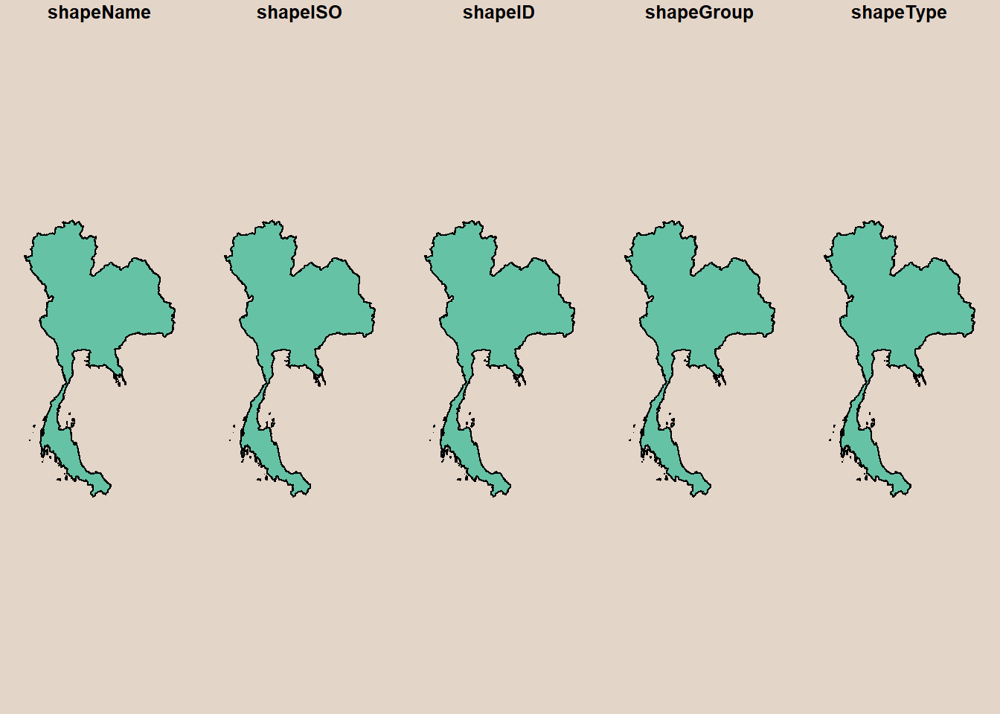

pacman::p_load(sf, tmap, tidyverse)Requirements
- Check units of measurement in projected coordinates system
The Packages
Loading the Data
Traffic Accident Data
rdacc_sf <- read_csv("data/geospatial/thai_road_accident_2019_2022.csv") %>%
filter(!is.na(longitude) & longitude != "",
!is.na(latitude) & latitude !="") %>%
st_as_sf(coords = c(
"longitude", "latitude"),
crs = 4326) %>%
st_transform(crs = 32647)Administrative Boundary
adminboundary <- st_read(dsn = "data/geospatial",
layer = "geoBoundaries-THA-ADM0")Reading layer `geoBoundaries-THA-ADM0' from data source
`C:\kytjy\ISSS626-GAA\In-class_Ex\In-class_Ex02\data\geospatial'
using driver `ESRI Shapefile'
Simple feature collection with 1 feature and 5 fields
Geometry type: MULTIPOLYGON
Dimension: XY
Bounding box: xmin: 97.34381 ymin: 5.612851 xmax: 105.6368 ymax: 20.46483
Geodetic CRS: WGS 84par(bg = '#E4D5C9')
plot(adminboundary)
Thai Roads
roads <- st_read(dsn = "data/geospatial",
layer = "hotosm_tha_roads_lines_shp")Reading layer `hotosm_tha_roads_lines_shp' from data source
`C:\kytjy\ISSS626-GAA\In-class_Ex\In-class_Ex02\data\geospatial'
using driver `ESRI Shapefile'
Simple feature collection with 2792590 features and 14 fields
Geometry type: MULTILINESTRING
Dimension: XY
Bounding box: xmin: 97.34457 ymin: 5.643645 xmax: 105.6528 ymax: 20.47168
CRS: NA